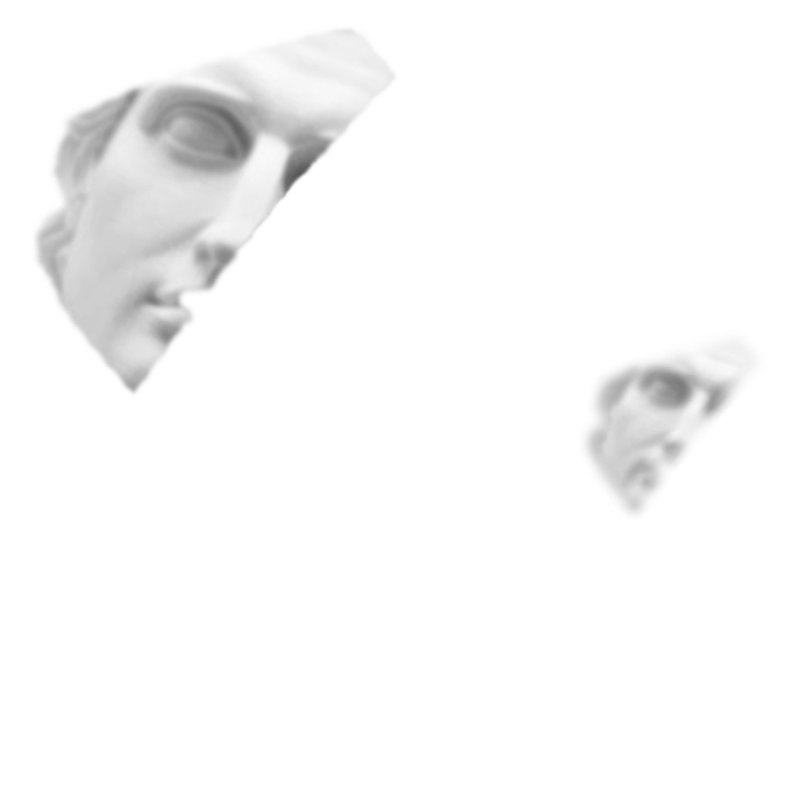
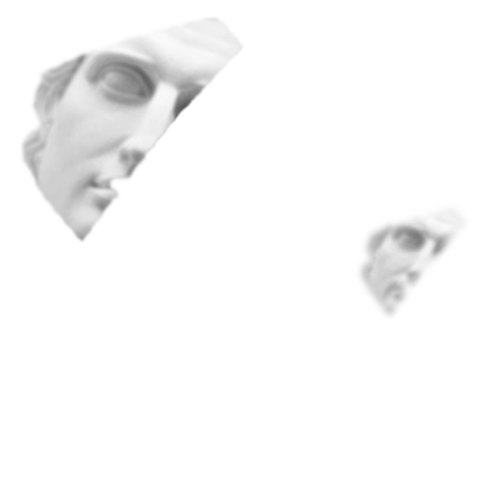
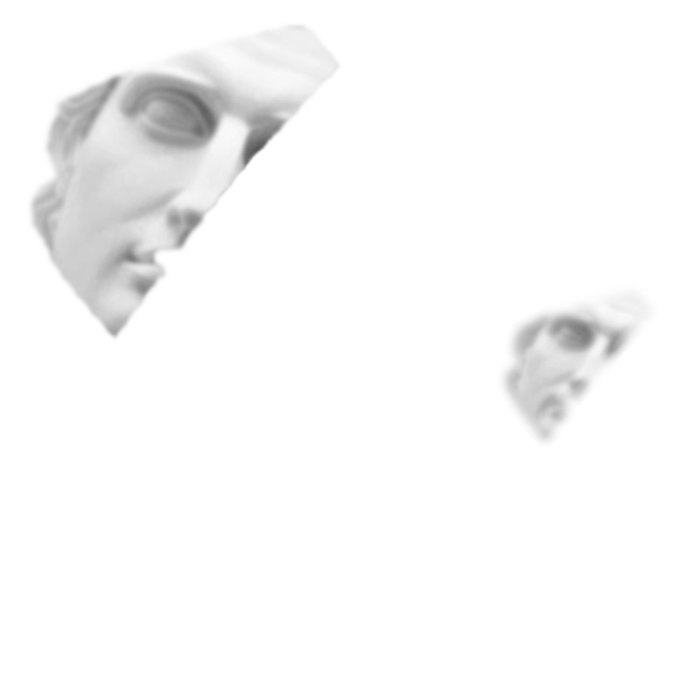

HOW CAN I HELP YOU
and why you should care.
I create usable and aesthetic solutions on the place where usability, business and technology meat each other.
You have never seen portfolio like that !
Loading...

I create usable and aesthetic solutions on the place where usability, business and technology meat each other.
I have completed 10+ UX and UI courses to successfully fill the UX Designer role in your company.
Before starting to learn design fundamentals I have already made lots of designs using my intuition and inner sense of style.
I have successfully graduated from School of Arts of Talalaivka. This gave me the feeling of beauty and helped my inner artist to grow.
This gave me a good understanding on how the software is built and optimised.